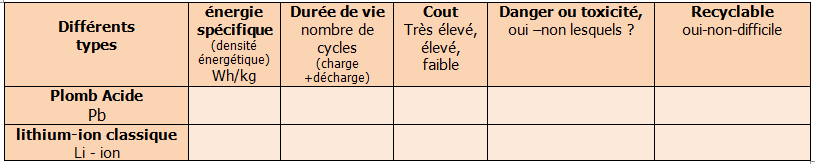
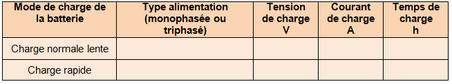
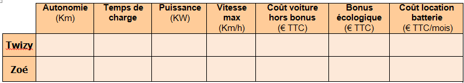

INNIVATION: BATTERIE ET RECHARGE
Innovation: La batterie
☞Une innovation de rupture: C’est une innovation qui porte sur un produit ou un service et qui finit par remplacer une technologie dominante sur un marché. Exemple: Les cd et dvd qui ont remplacé les disques vinyles et les cassettes vidéo.
- A partir des documents « La gamme (cliquer)» et « Une rupture technologique (cliquer)», indiquer l’innovation de rupture récente permettant la naissance des véhicules électriques?
- A partir du document « Recyclage des batteries », préciser les problèmes rencontrés qui sont liés au recyclage spécifique des batteries lithiums des véhicules électriques.
- Nous allons comparer les technologies actuelles des batteries, compléter le tableau ci-dessous:
Liens à utiliser : http://voiture-electrique.durable.com/a-les-differentes-technologies-de-batteries-pour-voitures-electriques
et http://voiture-electrique.durable.com/a-le-recyclage-des-batteries-pour-les-voitures-electriques

Innovation: La recharge des batteries
- A partir du document « l'infrastructure de recharge (cliquer)», caractériser le type d'énergie lors de la charge de cette batterie. Completer le tableau:

- Indiquer un mode de recharge de la voiture électrique permettant d’effectuer de grand parcours (sur autoroute). Expliquer
- A partir du document « Une vision pour demain», indiquer les améliorations futures envisagées pour faire évoluer les dispositifs de connexion lors de la recharge.
- En utilisant le site suivant, http://voiture-electrique.durable.com/a-la-recuperation-d-energie-au-freinage indiquez un mode de charge supplémentaire ; expliquer le principe.
- A partir des documents « La gamme 'cliquer)», comparer les caractéristiques et les coûts de la Zoé de la Twizy (tableau):

Created with the Personal Edition of HelpNDoc: Qt Help documentation made easy